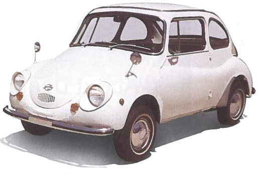
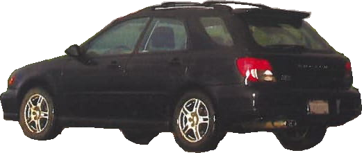

I just found another good reason to appreciate my Outback Wagon! Based on the annual vehicle insurance ratings from my auto
insurer, the Outbacks (2002-2005 models) are among those top-rated cars on its Liability Rating Index, Vehicle Safety
Discount and Damage & Theft Index. I feel so wonderful that my car is among some Audis, BMWs, Mercedes, Saabs and Volvos
for some measures.
Gene Young
Mountain View, CA
First Love
I finally bought my first new car - and it's a Subaru! I love it!
My first Subaru experience was in 1970, as a poor college student. My girlfriend loaned me an older Subaru car. I call it a
car, but it barely sat two people. It was so tiny, with 10-inch wheels, perhaps 10 feet long.

But it had a two-stroke engine that got about 50 miles to the gallon, and it was so much fun to drive! Do you recall these
vehicles?
Richard Wendel
Reno, NV
You have described the Subaru 360, the first Subaru car. It was introduced in Japan in 1958 and built until 1970.
At the End of the Rainbow
As I was driving home, I noticed the rainbow and had to stop to take a few pictures.
My WRX takes me safely through mud, under the rain, to the end of the rainbow!
Location: Fields along Molera Road (Moss Landing/Castroville, CA)
Heidi Funes-Fonseca
Freedom, CA

OUR BEST FEEDBACK COMES FROM
Subaru Drivers
FOR COMMENTS CONCERNING DRIVE MAGAZINE, send e-mail to: drivemag@subaru.com, or write to: Editor, Drive
Magazine, PO Box 514025, Milwaukee, WI 53203-3425.
For other customer service-related questions, comments and product information, or to change your address or ownership
information, contact us at (800) SUBARU-3[(800) 782-2783] or www.subaru.com.
We reserve the right to edit all letters and articles set for publication in Drive magazine. Letters and all
materials submitted with them (including photographs) become the property of Drive magazine and may be
republished in any form or medium and will not be returned.